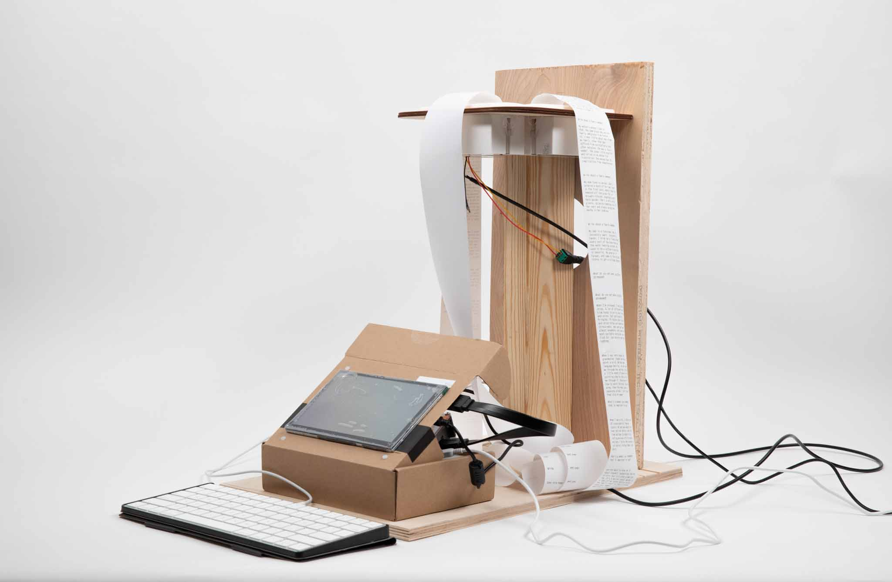
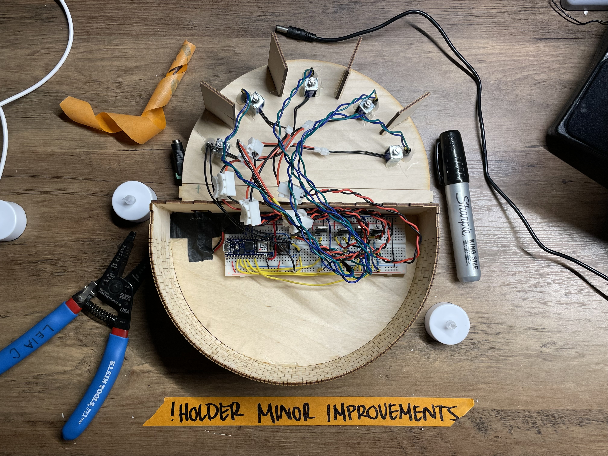
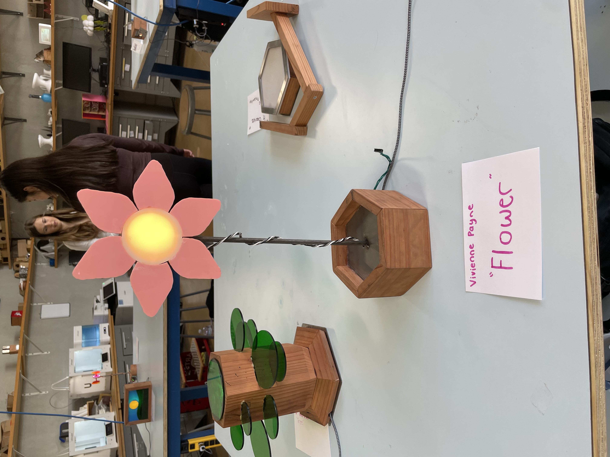

Hardware Week 2: Beyond the Board
Hardware Controllers
Questions from last class?
Warmup: Get the lyrics from your favorite song. Program your board such that every time you press a button, it prints out the next line of the song.
While you do that, ask yourself: When your board prints, where does it go?
Moving the Board
Acceleration

import time
from adafruit_circuitplayground import cp
while True:
x, y, z = cp.acceleration
print((x, y, z))
time.sleep(0.1)

Try setting your board flat on the table. Which axis has the highest number?
What happens if you flip the board over?
What if you hold it upright?
What if you shake it?
Ideate: What can you do with this?
The CircuitPlayground has some built-in utilities that use the accelerometer.
You an detect shakes:
from adafruit_circuitplayground import cp
while True:
if cp.shake():
print("Shake detected!")
Or taps!
import time
from adafruit_circuitplayground import cp
cp.detect_taps = 2
while True:
if cp.tapped:
print("Tapped!")
time.sleep(0.05)
Use moving the board as an input! You can use the raw accelerometer values, taps, or shakes.
Challenges:
- Make your board do something different based on which axis is experiencing the most force.
- Use all three axis inputs at once. (Think ... what else has 3 values?)
So what is Serial?
We already can get our boards talking ...
print("Hello!")
Without even knowing it, we're already using Serial.
import time
while True:
print("hi there")
time.sleep(1)
So what is serial?
Serial is a way of connecting 2 devices across one communication channel.
Serial communication talks one bit at a time, sending information in a single channel.
This is how serial communications are hooked up. Each device has an RX (Receive), TX (Transfer), and a shared GND.

Note that they're relative to the DEVICE.
You should see something like this:

These are called COM Ports/Serial Ports - each is a different device.
Find the COM port that's connected to your board. It'll likely look like usbmodemXXXX.
Then, run cat /dev/cu.usbmodem1101 1
-
replace my usbModem number with your own ↩︎
Another way to listen to our serial channel:
-
Use this in Chrome! Potentially not supported in other browsers. ↩︎
An important note: only one device/app/listener can connect to serial at a time.
If you're not able to connect on serialterminal.com, check that you've closed your serial and plotter on Mu.
Bonus: your board can technically listen to your computer too.
import supervisor
import sys
while True:
if supervisor.runtime.serial_bytes_available:
msg = sys.stdin.readline().strip()
print("got:", msg)
*This is not well supported in CircuitPython ... but technically possible.
Now let's talk to everything else
Let's get your board to talk to P5.
import time
from adafruit_circuitplayground import cp
while True:
x, y, z = cp.acceleration
print(f"{x:.2f},{y:.2f},{z:.2f}")
time.sleep(0.05)
WebSerial is an API that lets websites connect directly to your serial devices.
Structuring Data
(-3.44742, -1.37897, 9.11651)
vs
-3.44742, -1.37897, 9.11651
Use another input on your board to talk to a P5 sketch.
Challenges:
- Send more than one input at a time. Use them to control different things.
- Can you your accelerometer control your neopixels and your P5 sketch at the same time?
Beyond a Bare Board
Let's give our boards some flair
Building a body protects your electronics, but also tells people how to use them.


Our circuit boards are nice, but they could be so much more.
Giving them a body can change how we interact with them. You might interact with these two differently.



Using the light? Diffuse it for a nicer glow, or use its shape to tell a story.
Remember these screw terminals? You can also use them to anchor the board to a shell.
However, DON'T use GND, 3.3V, or VOUT.


Want a wearable? You could also sew, or string the board to secure it.

And you can make anything with cardboard.


Imagine a housing, cover, or other body for your board.
Make it out of cardboard, paper, cloth, tape, or other readily available materials.
Saturday Project
Create an interactive art piece that uses both hardware and digital aspects to create a compelling interaction.
Consider how they interact; how can a physical object support a digital work? How do you make your interaction clear?
Your CircuitPlayground could be a controller, an extension, peripheral, a wearable, or something else entirely.